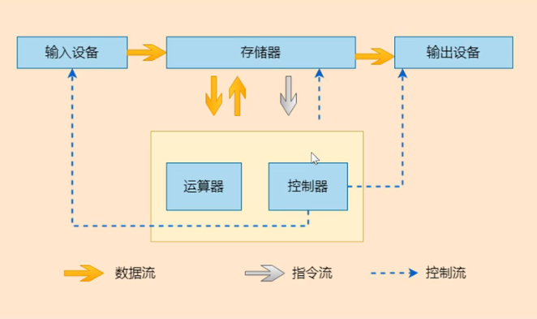
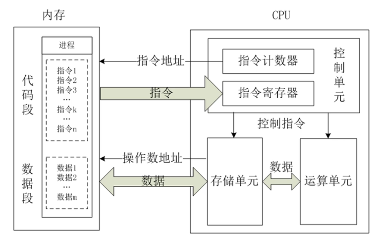
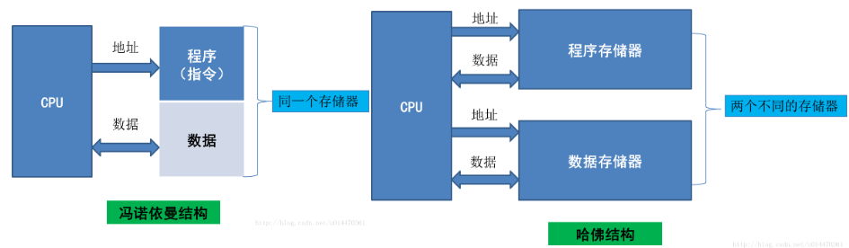
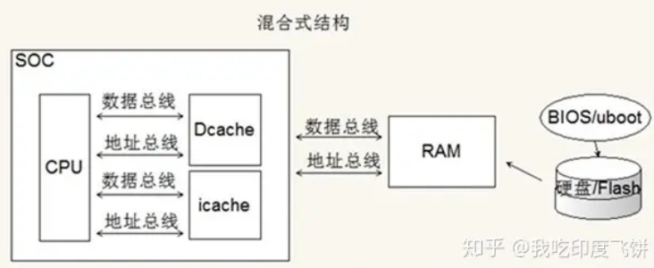
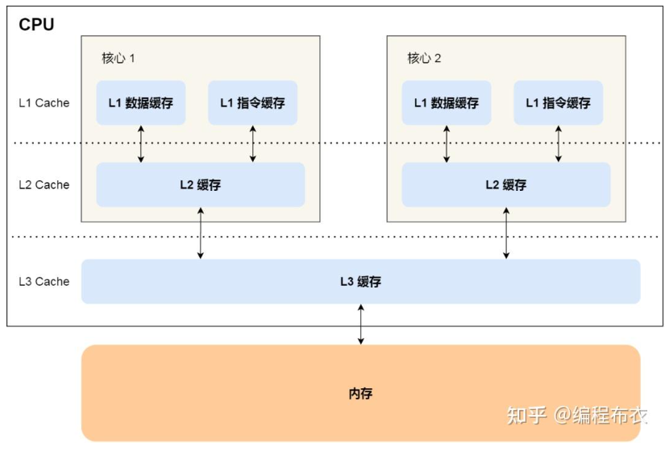
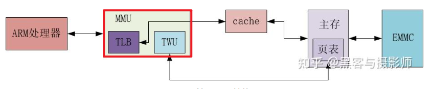

03 计算机组成原理
计算机组成原理
参考链接
1.计算机的组成
计算机通常包括以下几部分：
- 输入设备
- 输出设备
- CPU：运算器 + 控制器 + 寄存器 + Cache + MMU + TLB…
- 总线：数据总线 + 地址总线 + 控制总线
- 存储器

2.存储器
存储器包含以下几种==类别==，不同类别的存储器单字节成本、访问速度都不同
- 寄存器：CPU可直接访问、访问速度最快，差不多等于CPU的时钟周期
- 高速缓冲存储器(Cache)：CPU可直接访问，用于存放当前运行程序中的活跃部分，以便快速向CPU提供数据和指令，Cache又分为L1、L2、L3缓存，大小依次增大，速度依次减小
- 主存储器：CPU可直接访问，广义上的运行内存(RAM)，用于存放当前运行程序的数据和指令
- 辅助存储器：CPU不可直接访问，用于存放当前暂时不用的程序的数据和指令，用到时再拷贝到RAM中
访问速度：
- Cache：几百到上千GB/s
- 内存：几十GB/s
- 磁盘：几百MB/s
3.CPU的运行原理
CPU就包含3大部分：控制单元、运算单元和寄存器。运算单元只能访问寄存器里的数据，所以需要先把数据和指令从内存读取到寄存器中
CPU的运行可以概括为一句话：首先从内存中取出指令和数据，再在CPU内部执行指令，进行运算，运算完毕后再传回内存中
4.指令执行的步骤
- 取指令：CPU的控制器根据指令计数器从内存中读取一条指令并放到指令寄存器里
- 指令译码：译码指令寄存器里存放的指令，得到该指令进行什么操作、操作数的地址
- 执行指令：分为“取操作数”和“执行运算”2个步骤
- 修改指令计数器：决定下一条指令的地址
5.流水线
CPU的流水线（Pipeline）是一种提高处理器执行效率的技术，将指令执行过程划分为多个阶段，并使多个指令在不同阶段之间并行执行，从而实现指令级并行
CPU流水线通常包括以下几个阶段：
- 取指（Instruction Fetch）：从内存中获取下一条指令。
- 译码（Instruction Decode）：将指令解析成对应的操作码和操作数，并为执行阶段做准备。
- 执行（Execute）：执行指令的具体操作，如算术运算、逻辑运算等。
- 访存（Memory Access）：如果指令需要访问内存，这个阶段用于进行数据的读取或写入操作。
- 写回（Write Back）：将执行结果写回到寄存器中，更新寄存器的内容。
每条指令在流水线中按顺序通过不同的阶段，形成一个连续的流水线操作。当一个指令完成当前阶段的操作后，就会进入下一阶段，同时下一条指令进入到当前阶段，从而实现指令的并行执行。
通过流水线技术，CPU可以实现更高的处理能力和更好的性能指标，因为在同一时钟周期内可以同时执行多个指令。然而，流水线也会引入一些问题，如流水线的阻塞、冲突和分支预测问题，可能导致流水线效率下降。为了解决这些问题，还可以采取一些技术手段，如超标量流水线、动态调度、乱序执行等。
ARM3级流水线步骤
- 取指
- 译码
- 执行
6.协处理器
ARM体系结构允许通过增加协处理器来扩展指令集，一般的协处理器是用于控制片上系统功能的，比如：控制Cache、MMU、中断向量表
- 在程序运行的过程中，每个协处理器忽略属于ARM处理器和其他协处理器的指令
- 当一个协处理器收到它不支持的指令时，会产生一个未定义的异常中断，但是在中断中可以通过软件模拟该硬件的操作
7.冯诺依曼和哈佛架构
冯诺依曼架构：指令和数据不加区分的存储在存储器中，由同一个总线传输。优点是总线开销小，控制逻辑简单，缺点是执行效率低（多用于台式机和服务器）
哈佛架构：指令和数据分开存储，优点是执行效率高，缺点是总线开销大，控制逻辑复杂（多用于MCU）
| 体系 | 冯诺依曼 | 哈佛 | 改进的哈佛（现代ARM） |
|---|---|---|---|
| 数据与程序存储方式 | 存储在一起 | 分开存储 | 分开存储 |
| CPU总线条数 | 1*(地址+数据) | 2*(地址+数据) | 1*(地址+数据)（新增cache，cpu由1条总线读cache，cache有2条总线） |
| 取指操作与取数据操作 | 串行 | 并行，可预取指 | 并行，可预取指 |
| 缺点 | 成本低 | 成本高 | 综合 |
| 优点 | 执行效率低 | 效率高，流水线（取指、译码、执行） | 同哈佛 |


我们之前用的CortexM系列的STM32、8051，其实是属于哈佛架构的，程序和数据分别存在了MCU中的Flash和RAM上
而Cortex A系列的Soc，或者PC上的CPU，一般都是改进哈佛架构的，在CPU外部，程序和数据都存在RAM中，但是在CPU内部又有iROM和iRAM，用于Soc启动时的引导
8.Cache
Cache（缓存）是CPU内部的一种用于临时存储数据的==高速存储器==，一般是SRAM。它位于==处理器和外部RAM之间==，目的是减少处理器访问主内存的时间，提高计算机系统的整体性能。通常，缓存存储着频繁访问的数据或指令，这样可以避免每次都从较慢的主内存中读取数据
Cache的作用
- 提高性能：由于缓存是高速存储器，能够显著减少访问主内存的次数，从而提高计算机系统的执行效率
- 降低延迟：访问缓存的数据通常比访问主内存的时间要短得多，这对于提升系统响应时间至关重要
Cache的工作原理
局部性原理：缓存利用程序访问数据时具有的局部性原理（时间局部性和空间局部性）。时间局部性意味着程序会重复访问最近使用的数据；空间局部性则是指访问某一数据后，附近的数据也有可能被访问。因此，缓存会将这些数据存储起来，方便之后的快速访问
Cache的层次结构
- L1 Cache：通常位于处理器内核内部，存取速度最快，容量最小。每个处理器核心通常都有独立的L1缓存。又被分为I-Cache和D-Cache
- L2 Cache：一般比L1大，速度稍慢，但仍然比主内存快
- L3 Cache：通常比L2更大且更慢，多个处理器核心可能共享L3缓存
一般一个核内部最多有L1、L2Cache，L3Cache一般多个核共享
Cache的物理结构
Cache实际上是由多个Cacheline组成的，Cacheline是从缓存中读写数据的基本单位（一般是多个字节），它的结构如下：
1 | | Tag (20~40 bits) | State (MESI) | Valid | Dirty | Data (512 bits = 64 Bytes) | |
| 字段 | 位数 | 作用 |
|---|---|---|
| 数据块 | 64字节（举个例子） | 存储从主存加载的实际数据 |
| 标记(Tag) | 20~40位 | 标识该缓存行对应的主存物理地址的高位部分（用于匹配内存块） |
| 状态位 | 2~4位 | 维护缓存一致性协议的状态（如 MESI 中的 Modified/Exclusive/Shared/Invalid） |
| 有效位 | 1位 | 标记该缓存行是否包含有效数据（1=有效，0=无效） |
| 脏位 | 1位（可选） | 标记数据是否被修改过(和内存中不一样) 仅写回策略需要，写直达策略不需要 |
Cache的组织方式
Q：假设我们主存中有32个块，而我们的cache一共有8个cacheline，那么我的第12块内存应该放到Cache中的哪个Cacheline呢？
缓存通过将内存地址划分为索引（Index）+ 标记（Tag）+ 偏移（Offset）字段来决定数据放到哪个Cacheline，具体分为三种映射方式：
1.直接映射（Direct mapped）：
- 每个主存块只能映射到缓存中唯一固定的位置（类似哈希表）
- 易发生冲突（多个主存块竞争同一缓存行）
2.全相连（Fully associative）：
- 主存块可以放在cache的任何位置
- 无冲突，但硬件成本高（需并行比较所有标记）
3.组相连（set associative）：
- 缓存分为多个组（Set），每组包含多个缓存行（Way）。主存块可映射到同一组内的任意行
1 | 组号 = (主存地址 / 缓存行大小) % 组数 |
内存地址的划分
假设一个 32位内存地址和 64字节缓存行（Cache Line），可以通过如下方式划分内存地址：
1 | | 31 ------------------------ 12 | 11 ----- 6 | 5 -- 0 | |
- Offset（偏移）：
- 作用：定位缓存行内的具体字节
- 位数：由缓存行大小决定
- 若缓存行为 32字节，则 Offset 为 5位
- Index（索引）：
- 作用：选择缓存中的 组（组相联缓存）或直接映射的行（直接映射缓存）
- 位数：由 缓存组数决定。
- 例如：64组缓存 = 2^6=64 → 6位 Index
- Tag（标记）：
- 作用：与Cacheline的Tag字段对比，来找到内存对应的Cache
- 位数：剩余高位地址（32位地址 - Index - Offset）
- 上例中：32 - 6 - 6 = 20位 Tag
根据映射时拆分的内存地址到底是物理地址还是虚拟地址，可以分为以下几类：
- 物理索引物理标记（PIPT）：
- 缓存使用物理地址的
Tag|Index|Offset - 优点：无别名问题（多个虚拟地址映射同一物理地址时数据一致）
- 缺点：需先查 TLB（页表）获取物理地址，延迟高
- 缓存使用物理地址的
- 虚拟索引虚拟标记（VIVT）：
- 缓存使用虚拟地址的
Tag|Index|Offset - 优点：无需 TLB，速度快
- 缺点：别名问题（需操作系统处理，如页着色）
- 缓存使用虚拟地址的
- 虚拟索引物理标记（VIPT）：
Index和Offset用虚拟地址，Tag用物理地址- 折中方案：常见于现代 CPU（如 ARM Cortex-A、Intel/AMD）
Cache替换策略
当缓存满时，需要决定哪些数据应该被替换掉以腾出空间。这通常通过替换策略来决定，如最近最少使用（LRU，Least Recently Used）、最不常用（LFU，Least Frequently Used）等
Cache的写入策略
当CPU执行sd指令即往内存中写数据的时候，首先需要对Cache进行写入操作，那Cache何时==把数据真正地写入内存==呢？此时Cache的行为也分为2个类型：
写直达（Write-through）：把数据同时写入Cache和内存
- 如果数据已经在 Cache 里面，先将数据更新到 Cache 里面，再写入到内存里面
- 如果数据没有在 Cache 里面，就直接把数据更新到内存里面，再写到Cache里
- 问题：性能低
写回（Write-back）：当发生写操作时，新的数据仅仅被写入CacheLine里，只有当修改过的CacheLine「被替换」时才把数据写到内存中
数据已经在 Cache 里面（Tag匹配上了）
- 如果对应CacheLine的dity位=0，则不会写到内存里，只更新Cache里的数据，并更新dity位=1
- 如果对应CacheLine的dity位=1，替换一个CacheLine，并将被替换的CacheLine的数据写回内存，新的数据还是不会写到内存
数据没在 Cache 里面（组里所有Cacheline的Tag都不匹配）
- 使用LRU等策略选择一个被替换的Cacheline进行写入，如果它的dirty=1，则将被替换的Cacheline的数据写回内存
缓存一致性问题
发生原因
- 核间缓存一致性问题：现代 CPU 采用 多级缓存（L1/L2/L3） 结构，每个核心有独立的 L1/L2 缓存，共享 L3 缓存或主存。当某个核心修改了自己的缓存数据时，其他核心的缓存副本可能仍然是旧值。
- 核内缓存一致性问题：此外，DMA会绕过CPU直接将外设中的数据写入内存，但CPU中的Cache并未更新，此时CPU可能也会读取到旧值
解决办法
1.核间缓存一致性：MESI协议（一种硬件协议）
总线嗅探机制：某个 CPU 核心更新了 Cache 中的数据，会把该事件广播通过总线通知到其他核心
MESI协议：它是一个硬件自带的协议，通过总线嗅探机制和状态机的模型，来解决缓存一致性问题
MESI定义了Cacheline的4个状态：
- Modified: 已修改
- Exclusive: 独占
- Shared: 共享
- Invalidated: 已失效
- 「已修改」状态就是我们前面提到的脏标记，代表该 Cacheline 上的数据已经被更新过，但是还没有写到内存里。而「已失效」状态，表示的是这个 Cacheline 里的数据已经失效了，不可以读取该状态的数据。
- 「独占」和「共享」状态都代表 Cacheline 里的数据是干净的，也就是说，这个时候 Cacheline 里的数据和内存里面的数据是一致性的。
- 「独占」和「共享」的差别在于，独占状态的时候，数据只存储在一个 CPU 核心的 Cache 里，而其他 CPU 核心的 Cache 没有该数据。这个时候，如果要向独占的 Cache 写数据，就可以直接自由地写入，而不需要通知其他 CPU 核心，因为只有你这有这个数据，就不存在缓存一致性的问题了，于是就可以随便操作该数据。
- 另外，在「独占」状态下的数据，如果有其他核心从内存读取了相同的数据到各自的 Cache ，那么这个时候，独占状态下的数据就会变成共享状态。
- 那么，「共享」状态代表着相同的数据在多个 CPU 核心的 Cache 里都有，所以当我们要更新 Cache 里面的数据的时候，不能直接修改，而是要先向所有的其他 CPU 核心广播一个请求，要求先把其他核心的 Cache 中对应的 Cache Line 标记为「无效」状态，然后再更新当前 Cache 里面的数据。
2.核内缓存一致性
- DMA从外设–>内存：当DMA将数据写入内存后，CPU需要无效化（Invalidate）相关缓存行，确保后续读取时从主存加载最新数据
- 现代CPU缓存控制器会自动检测并无效化相关Cacheline
- 如果不支持硬件自动无效化缓存，需要手动通过一些汇编代码无效化相关Cacheline
- DMA从内存–>外设：当CPU写入数据后，可能发生Cache更新了但内存还未更新的情况，此时用DMA把内存中的数据写到外设，可能写的是旧数据，因此需要刷回（Flush）Cacheline到主存
- 一般使用汇编指令来刷回Cacheline到主存
3.OS的支持
操作系统（如 Linux）提供 一致性内存映射，自动处理缓存同步：
1 | // Linux 内核示例 |
- 内核将该内存标记为 非缓存（Uncached） 或 强制刷回
- 适用于频繁 DMA 传输的场景（如网卡、显卡驱动）
参考链接
面试问题
1.二维数组是逐行读取快还是逐列读取快？为什么
- 哪种读法快取决于该语言中2维数组在内存中怎么存的。以C为例，二维数组在内存中是以行优先的方式存放的，同一行相邻元素在内存中是连续的，由于CPU每次从内存中读数据都是以Cacheline为单位,即一次会读多个字节的内容到Cache中，所以当我们访问
a[i][j]时,该行的后面多个元素a[i][j+n]都会被加载到缓存中，后边访问就比较快了。所以针对C/C++，逐行读取快
2.如何提高cache命中率
3.多核的Cache问题怎么处理？
- 硬件层面：使用缓存一致性协议(如MESI)
- 软件层面：内存屏障、原子操作
9.MMU
MMU（Memory Management Unit，内存管理单元）是CPU中用于管理虚拟内存和物理内存之间映射的硬件组件。它的核心功能是将程序访问的虚拟地址转换为实际的物理地址，同时进行内存保护、分页（或分段）等操作。

MMU的物理结构
MMU内部主要包含2个组件：
- TLB：一个高速缓存，用于缓存页表转换的结果，从而缩短页表查询的时间
- TWU：一个页表遍历模块，页表是由操作系统维护在物理内存中，但是页表的==遍历查询是由TWU完成==的，这样减少对CPU资源的消耗
MMU的主要功能
- 虚拟地址到物理地址的转换：
- 虚拟内存：现代操作系统使用虚拟内存技术，将程序的地址空间与物理内存分离。每个程序认为自己有独立的内存空间，这种空间称为虚拟地址空间。
- 地址转换：当程序访问某个虚拟地址时，MMU会将该虚拟地址转换为相应的物理地址。这个过程通常通过查阅页表（Page Table）来完成，页表存储了虚拟地址与物理地址的映射关系。
- 内存保护： MMU可以为不同的进程提供内存隔离，防止一个进程非法访问另一个进程的内存空间。例如，可以设置特定区域的内存为只读或禁止访问，从而增强系统的稳定性和安全性。
- 分页管理：
- 分页（Paging）是将虚拟地址空间划分为固定大小的块，称为页（Page），而物理内存则被划分为同样大小的块，称为页框（Page Frame）。
- MMU会使用一个页表（Page Table）来管理虚拟页和物理页之间的映射关系。每当程序访问一个虚拟地址时，MMU通过查阅页表，将虚拟地址转换为物理地址。
- 当虚拟地址需要访问的页不在物理内存中时，会发生页面错误（Page Fault），操作系统会将数据从硬盘调入内存。
- 缓存管理： 为了提高虚拟地址到物理地址转换的效率，现代MMU通常配备了TLB（Translation Lookaside Buffer，翻译后备缓冲区），它是MMU内的一个高速缓存，用于存储最近使用的虚拟地址到物理地址的映射。通过查阅TLB，MMU能够更快地完成地址转换。
- 分段管理（可选）： 除了分页外，MMU还可以支持分段（Segmentation）机制。分段将内存划分为==大小不等==的块（段），每个段有自己的基地址和长度。程序访问某一段时，MMU根据段号和偏移量进行转换。分段可以用于更灵活的内存管理，特别是在需要支持不同类型内存区（如代码段、数据段、堆栈段等）的情况下。
MMU的工作原理
MMU是一个硬件，它对于内存的映射都是自动的，只要通过设置对应的控制寄存器就能开启MMU，在设置了其页表地址的寄存器后，再访问内存地址时，他就会自动的根据页表来把虚拟地址翻译成物理地址。且在进程切换时，也要修改对应的寄存器来切换页表
页表是就是个保存了va–>pa映射关系的一个数组，它由OS内核维护，每个PCB都有一个独立的页表
MMU的工作流程
- 程序发出对某个虚拟地址的访问请求。
- MMU接收到虚拟地址，并查阅TLB来检查该虚拟地址是否有对应的物理地址映射
- 如果TLB命中，MMU直接使用该映射地址进行访问
- 如果TLB未命中，MMU查阅页表来找到虚拟地址对应的物理地址，并将该映射加载到TLB中，以备后续使用
- 如果虚拟地址不在物理内存中，MMU触发页面错误，操作系统将从硬盘加载相应的页面到内存
MMU的地址转换机制
MMU的地址转换过程通常是通过多级页表和虚拟地址的分段来实现的。
虚拟地址通常分为以下几部分：
- 页目录索引（Page Directory Index）
- 页表索引（Page Table Index）
- 页内偏移（Page Offset）
参考链接
面试问题
1.说下CPU访问内存过程？
- 首先看TLB缓存是否命中。命中的话直接使用TLB中的映射地址进行访问
- 若TLB未命中,CPU会发出请求,请求MMU进行地址转换,MMU会先检查页表是否有该虚拟地址的映射,如果有,MMU会将该映射加载到TLB中,以备后续使用
- 如果TLB中没有该映射,MMU会发出Page Fault,操作系统会将数据从硬盘调入内存,然后再将该映射加载到TLB中,以备后续使用
2.有没有操作过MMU
- XV6开发中操纵RISC-V的
satp寄存器，修改页表基址、几级页表 - 切换页表是使用
sfence.vma指令，刷新TLB缓存
3.知道MMU吗？
4.如何快速的去操作内存地址？
- 减少内存访问次数：用批量访问代替逐字节访问
- 提高缓存命中率
- 使用内存池,避免频繁分配内存
5.MMU实现内存地址映射的原理
- 以RISC-V的sv39分页机制为例，对于RV64来说，虽然一个地址有64位，但只有低39位有效，这39为又可看成4部分，高27位分别是L0、L1、L2级page directory中PTE的索引，
低12位为页内偏移，在进行地址转换时，首先将当前进程的页目录基址装载到satp寄存器，然后进行TWU，经过多级页表，找到最后的PTE，里面存了相应的物理页号，再加上页内偏移，得到物理地址，完成地址转换
10.TLB
LB（Translation Lookaside Buffer，翻译后备缓冲区）是一种高速缓存，用于加速虚拟地址到物理地址的转换。注意：==TLB是MMU内部的一个组件==
TLB的作用
缓存最近使用的虚拟地址到物理地址的映射。通过缓存这些映射，TLB可以减少每次访问内存时MMU查找页表的时间，从而加速内存访问
TLB的工作原理
当CPU发出对虚拟地址的访问请求时，TLB会首先检查这个虚拟地址是否已经在缓存中
- TLB命中：如果TLB中已有该虚拟地址的映射，MMU可以直接使用该物理地址进行内存访问，无需查找页表
- TLB未命中：如果TLB中没有该映射，MMU会查找页表获取虚拟地址到物理地址的映射，并将该映射加载到TLB中，以便后续使用
TLB的结构
TLB中的每一条条目包含以下信息：
- 虚拟页号（VPN）：虚拟地址中的一部分，用于在页表中查找对应的物理地址
- 物理页号（PPN）：物理地址中的一部分，表示内存中的位置
- 有效位（Valid bit）：标记该条目是否有效，无效条目可能会被替换
- 权限位：如只读、可执行、用户/内核模式等
- 标记位：标记该映射是否已被修改，或者用于其他一些标志
TLB的类型
- 一级TLB（L1 TLB）：直接集成在CPU核心内部，通常较小，但速度非常快。每个CPU核心通常有自己的L1 TLB
- 二级TLB（L2 TLB）：在一些处理器中，L2 TLB用于多个核心共享，容量比L1 TLB大一些，但访问速度稍慢。通常用于存储更大范围的虚拟地址到物理地址的映射
- 多级TLB：一些高级处理器可能具有多个级别的TLB，比如L1和L2共享部分地址映射，而L3可能用于更广泛的映射
TLB的替换策略
当TLB缓存满时，需要选择一个条目进行替换。常见的替换策略包括：
- LRU（Least Recently Used）：替换最近最少使用的条目
- FIFO（First In First Out）：替换最早加载的条目
- 随机替换：随机选择一个条目进行替换
TLB一致性问题
在多核处理器系统中，每个核心可能会有自己的TLB。如果一个核心更新了虚拟地址到物理地址的映射，其他核心的TLB可能会变得过时，导致一致性问题。为了避免这种情况，现代处理器通常会采用TLB一致性协议来确保各个核心的TLB保持同步
11.总线
总线是计算机系统中用于在不同硬件组件（如CPU、内存、外设等）之间传输数据、地址和控制信号的通道（物理上来看就是电路板上的几根线，由于这几根线是个整体，所以叫总线）。它是系统内部各个部件之间通信的基础设施。总线设计的好坏直接影响系统的性能和稳定性
总线的组成
总线通常由多个信号线组成，每一条信号线承担不同的功能，一种总线由以下部分组成：
- 数据总线：用于传输数据，数据总线的宽度（即信号线的数量）决定了每次传输的数据量，通常为8位、16位、32位或64位
- 地址总线：用于传输内存地址或外设的地址。地址总线的宽度决定了系统能够访问的内存空间的大小。例如，32位地址总线可以寻址2^32个内存地址（即4GB内存）
- 控制总线：用于传输控制信号，协调各个硬件部件的工作。例如，控制信号可以指示内存是否需要读取或写入数据，或者表示数据的方向（从CPU到内存还是从内存到CPU）
总线的工作原理
总线的工作原理依赖于计算机系统中不同组件之间的协调。具体来说，数据传输过程通常包括以下几个步骤：
- 发起传输请求：当CPU需要从内存读取数据或向内存写入数据时，它通过控制总线发起传输请求
- 地址传输：CPU将目标地址传送到地址总线上，标明要访问的内存位置或外设地址
- 数据传输：数据通过数据总线传输到目标组件，数据总线将存储在寄存器中的数据传输到内存或外设，反之亦然
- 控制信号：控制总线发送信号来确保数据传输的正确性，如控制读/写操作、数据传输的方向等
总线的带宽与速度
总线的带宽（即每秒钟能传输的数据量）和速度（即数据传输的速度）是两个重要的性能指标。总线带宽通常与总线的位宽和时钟频率相关：
- 位宽：总线的位宽决定了每次数据传输的比特数，例如，32位总线每次能传输32个比特的数据
- 时钟频率：总线的时钟频率越高，单位时间内传输的数据量越大，从而提高总线的传输速度
例如，PCI Express（PCIe）是一种高速的串行总线标准，具有较高的带宽和速度，可以支持多个设备并行通信
常见的总线类型
- PCI/PCI Express（PCIe）：广泛用于计算机主板中，用于连接各种扩展卡（如显卡、网卡、硬盘控制器等）。PCIe采用串行传输，支持高带宽，且逐渐取代了传统的PCI总线
- USB：主要用于连接外设，如鼠标、键盘、打印机、硬盘等。USB支持热插拔，并提供电力给设备，具有较强的扩展性
- SATA（串行ATA）：主要用于连接硬盘、光驱等存储设备，采用串行传输，速度相较于并行ATA有显著提升
- I2C/SPI：用于连接低速外设，如传感器、显示器等。I2C是串行的双线总线，而SPI支持高速的数据传输，常用于嵌入式系统
- AHB/APB/AXI：是AMBA总线标准中的一些总线，用于SoC内部各种硬件（CPU、DMA、各种外设间）的连接
12.DMA
DMA（Direct Memory Access）是用于高效数据传输的一种技术，能够实现外设和内存之间直接交换数据，而无需CPU干预，它通常以独立的控制器存在。DMA不仅减轻了CPU负担，提高了数据传输效率，还能在数据传输过程中保持CPU的并行计算能力，适用于大数据量、高带宽的应用场景
DMA的工作模式
DMA有几种常见的传输模式，具体方式取决于传输的源和目标设备以及数据的传输方向：
- 内存到内存
- 数据从一个内存位置传输到另一个内存位置
- 通常用于大数据块的移动，如从一个缓冲区复制数据到另一个缓冲区
- 外设到内存
- 数据从外设（例如传感器、ADC）传输到内存
- 比如一个传感器的测量结果可以直接写入内存供后续处理
- 内存到外设
- 数据从内存传输到外设
- 比如，将数据从内存直接写入到输出设备（如DAC、显示器）
- 外设到外设
- 数据从一个外设传输到另一个外设
- 比如在某些设备之间直接传输数据，而不通过内存（例如数据采集系统中，数据直接从一个外设转移到另一个外设）
DMA控制器的工作流程
- 请求：外设发起DMA请求，告诉DMA控制器需要进行数据传输
- 授予：DMA控制器检查是否可以访问总线如果没有其他设备正在使用总线，则控制器将授予DMA传输权限
- 传输：DMA控制器执行数据传输过程，直接在内存与外设之间传输数据
- 完成：传输完成后，DMA控制器会生成中断信号通知CPU此时，CPU可以处理传输后的数据
DMA的优势
- 减轻CPU负担：CPU可以将时间集中在计算和其他任务上，而不需要管理低效的数据传输操作
- 并行处理：DMA可以与CPU并行工作，CPU和DMA可以在同一时刻执行不同的任务，从而提高系统效率
- 高效传输：在大规模数据传输（如音视频流、网络传输等）中，DMA的效率要比传统的CPU控制的方式高得多
DMA的缺点
- 硬件需求：需要专门的DMA控制器，有时这可能增加硬件设计的复杂度和成本
- 可能的冲突：DMA控制器直接访问内存时，可能会与CPU访问内存发生冲突，特别是在高频繁数据访问的情况下。现代系统通过总线仲裁来解决这个问题
- 中断管理复杂：DMA传输完毕后需要通过中断通知CPU，这可能会带来中断处理的开销，尤其在高频率的传输中
DMA的实际应用
- 音视频数据传输：DMA常用于音视频设备中，大数据的传输速度要求非常高，CPU不可能直接参与每个数据的传输，因此使用DMA可以让外设与内存之间高效交换数据
- 网络数据传输：在网络芯片与内存之间的数据交换中，DMA大幅度提升了吞吐量
- 存储设备：如硬盘、固态硬盘（SSD）等设备的数据传输，也通常使用DMA来提升性能
- 嵌入式系统：在一些传感器数据读取、显示驱动等任务中，DMA也被广泛应用
面试题
1.有解决过CPU和DMA的问题吗？
- 回答解决使用DMA引入的缓存一致性问题